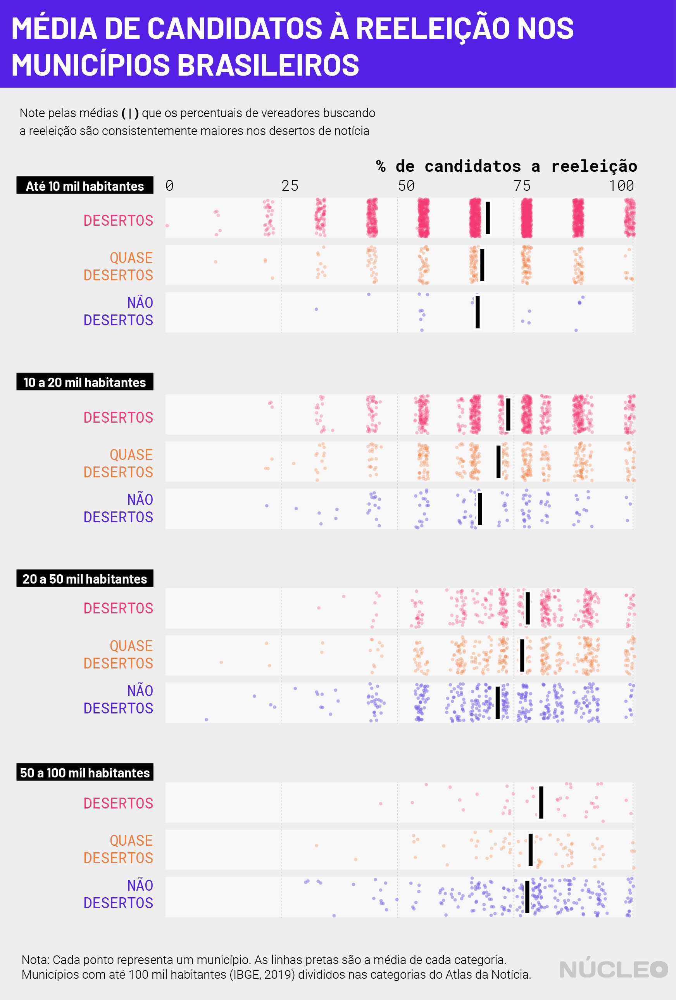

O percentual de vereadores que disputam a reeleição em cidades que não possuem organizações jornalísticas, os chamados “desertos de notícia”, é maior do que nos demais municípios de portes populacionais comparáveis.
As principais descobertas da análise do Núcleo mostram que, nos desertos com até 10.000 habitantes, o percentual médio de vereadores eleitos em 2016 que buscam reeleição é de 69,5%, ligeiramente maior do que nos municípios que possuem alguma presença de jornalismo.
É importante porque…
-
Desertos de notícia são locais sem iniciativas de jornalismo, as quais ajudam a informar o voto dos cidadãos
-
Perto das Eleições 2020, é importante ter uma referência de como os desertos de notícia se configuram, para que futuramente possamos ter melhores políticas públicas
Os desertos de notícia correspondem a 62,6% da totalidade dos municípios brasileiros, de acordo com o levantamento do Atlas da Notícia de 2019.
Nas faixas entre 10-20 mil e 20-50 mil habitantes, as diferenças são maiores, e esses valores chegam, respectivamente, a médias de 73,9% e 77,9% dos vereadores disputando a reeleição em cada município, se distanciando ainda mais dos chamados não desertos.
| Tamanho do município | Deserto | Quase deserto* | Não deserto |
|---|---|---|---|
| Até 10 mil | 69,4% | 68,2% | 67,2% |
| Entre 10 e 20 mil | 73,6% | 71,5% | 67,5% |
| Entre 20 e 50 mil | 77,9% | 76,4% | 70,8% |
| Entre 50 e 100 mil | 80,5% | 78,4% | 77,4% |
Fonte: Atlas da Notícia/Análise Núcleo Jornalismo
Analistas enfatizam que as eleições municipais são disputadas em torno de assuntos locais, como a condição de ruas e avenidas, coleta de lixo, valor de impostos municipais como o IPTU, entre outros.
Uma hipótese para esse evento é que ausência de jornalismo local dificulta o acesso a informação dos eleitores sobre esses assuntos, afetando o controle que cidadãos podem exercer sobre os políticos. Pesquisas realizadas nos Estados Unidos mostram que a ausência de veículos locais pode diminuir o engajamento dos cidadãos com a política, bem como afetar o exercício do controle social pelos eleitores.

Em 302 municípios brasileiros, todos os vereadores eleitos em 2016 disputam a reeleição - um total de 3006 legisladores. Desses, 68,2% são desertos de notícia, 21,2% quase-desertos e 10,6% não desertos. Ou seja, os desertos de notícia estão sobrepresentados nesta faixa de cidades.
Os desertos de notícia são, em geral, cidades pequenas (mediana de 7.100 habitantes). Eles são um fenômeno de abrangência nacional: somente quatro estados brasileiros possuem menos de 50% de seus municípios classificados nessa categoria. Além deles, o Atlas da Notícia chama atenção para os quase desertos, municípios com 1 ou 2 veículos jornalísticos, que também são tipicamente pequenos (mediana de 17.800 habitantes).
O relatório do Atlas da Notícia mostra uma associação entre a presença de veículos jornalísticos e o índice de desenvolvimento humano municipal (IDHM). Dentro dos recortes populacionais apresentados, os desertos de notícia também possuem um IDHM mediano inferior ao das demais categorias.
SOBRE CANDIDATOS A PREFEITURAS
A diferença nas disputas para a reeleição de vereadores não é observada na disputa pelo Executivo municipal. Entre os pouco mais de 4.300 prefeitos que poderiam se candidatar à reeleição em 2020, o percentual de recandidaturas se mantém na faixa de 75%. No geral, o percentual de prefeitos disputando a reeleição é maior do que em 2016, retornando aos patamares verificados em 2008 e 2012.
Nos últimos anos, a relação entre o trabalho da imprensa e a democracia esteve em grande evidência. Simultaneamente, o fechamento de veículos locais é uma preocupação mundial.
No Brasil, o projeto Atlas da Notícia realiza um levantamento de veículos jornalísticos pelo país e mostra um quadro preocupante de predomínio de desertos de notícia além de um número significativo de quase desertos.
COMO FIZEMOS ISSO
Os dados do Atlas da Notícia foram obtidos por meio do pacote newsatlasbr que acessa a API gratuita do projeto, e os dados eleitorais são do CepespData (2012 e 2016) e do TSE (2020).
Os pedidos de candidatura de 2020 que não tenham sido deferidos, estejam aguardando julgamento ou sob recurso pela Justiça Eleitoral foram desconsiderados. (Disclaimer: o Atlas da Notícia é um projeto desenvolvido pelo Volt Data Lab, empresa por trás do Núcleo)
Os dados dessa matéria se baseiam em pedidos de candidatura que não foram classificados como “renúncia”, “indeferido”, “não conhecido”, “falecido”, “cassado” ou “cancelado”. Como a Justiça Eleitoral está constantemente analisando os pedidos de candidatura, utilizamos os dados gerados em 24/10/2020, disponibilizados no Repositório de Dados Eleitorais do TSE.
O cálculo de candidatos a vereador que disputam a reeleição é feito com base nos eleitos em 2016 e no número de cadeiras em disputa naquela eleição (não foram encontradas eleições suplementares para este cargo no CepespData).
Realizamos o cálculo de candidatos à reeleição de prefeitos identificando quem seriam os prefeitos reelegíveis e quantos deles concorreram, pois só podem concorrer à reeleição prefeitos que estão em primeiro mandato. Em nossa análise, consideramos as eleições suplementares realizadas após 2012 e após 2016, de forma a identificar mais precisamente quem são os prefeitos que estão em primeiro mandato no ano de 2020.